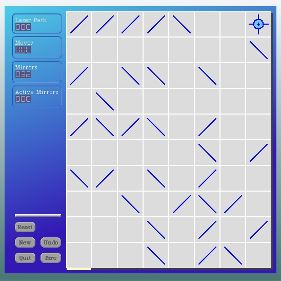

Let's look at #newMorphOfClass:event:.
newMorphOfClass: morphClass event: evt
"Attach a new morph of the given class to the invoking hand."
| m |
m _ morphClass new.
m installModelIn: myWorld. "a chance to install model pointers"
m wantsToBeOpenedInWorld
ifTrue:[myWorld addMorph: m]
ifFalse:[evt hand attachMorph: m].
myWorld startSteppingSubmorphsOf: m.
The key activity here we want to focus on is the first line of code. The "morphClass" gets sent #new.
We've already seen what happens when the class message #new gets sent to members of this hierarchy. The object gets instantiated and the #initialize instance method for that object is run. We should examine what the #initialize instance method we've written for LaserGame actually does.
initialize
self initializeForGrid: GridFactory demoGrid
Not much going on here but there's a key point. The GridFactory demoGrid is being used to create the LaserGame instance.
Our objective is clear. We want to create a new method on our GridFactory that answers a #defaultGrid for playing the game. The default grid should be randomized of course. And it should be larger. We already know how to do all that because of the Workspace code we've been using to launch LaserGame when we experiment with our code. So here's a new class method for GridFactory.
defaultGrid
^self randomizedGridOfExtent: 8@10
It's a simple matter now to use this method instead in our #initialize instance method on LaserGrid.
initialize
self initializeForGrid: GridFactory defaultGrid
Open up a new LaserGame from the standard alphabetical list menu...
It looks much better. Once again verify that we haven't broken any unit tests and then save our package. This should be version 20.